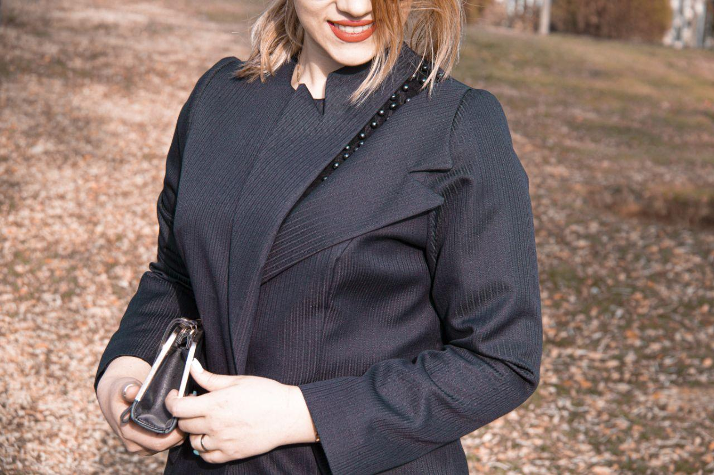

من شیرین چاوشیان هستم. مراحل طراحی و دوخت لباس تماما توسط خودم با الهام از هنر کلاسیک و مدرن انجام میشه. از دوران کودکی همواره در جستجو ایده های نو در دوخت لباس بودم و طراحی مدل های مختلف، همراه همیشگی کار حرفه ای من بوده.
در ۱۱ سالگی اولین مدرک معتبر خیاطی ام به روش گرلاوین را گرفتم و از همان دوران سعی در پیاده سازی ایده های مختلف داشتم. همیشه دوست داشتم راه متفاوتی برای انجام کارها پیدا کنم، به مرور متدهای مولر و متریک رو یاد گرفتم و در نهایت به روش اختصاصی خودم که ترکیبی از هر سه متد و اوریگامی هست دست پیدا کردم.
بیش از ۲۰ سال در زمینه انواع لباس عروس، رسمی و مجلسی به صورت خودکفا و با ایده های نو فعالیت کرده ام و حالا تمام این تجربه ها را در مزون سانای برای تولید لباس با کیفیت و متفاوت زنانه به کار گرفته ام.
در سانای سعی کردیم هنر و زیبایی و کیفیت رو کنار هم داشته باشیم تا از لبخند و رضایت مشتری هامون حس شادی یگیریم.